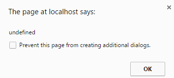

Κρύψιμο(δεν συνιστάται)
Για να αποκρύψετε τα popup μηνύματα, απλα πατηστε στο checkbox "Prevent this page from creating additoinal dialogs".
Σημείωση : Για την καλύτερη ενημέρωση σε θέματα αποφάσεων και επίτυχους ολοκλήρωσης, ΔΕΝ συνιστάται η απόκρυψη των μηνυμάτων

Εμφάνιση
Σε περίπτωση που δεν βλέπετε τα μηνύματα ελέγχου επιλογών η επιτυχούς ολοκλήρωσης της εργασίας, προσπαθείστε να ενεργοποιήσετε την επιλογή για τα Pop up Windows
Αναλυτικά Βήματα για κάθε ενα απο τους πιο κάτω Web Browsers(πατηστε το link)
- Microsoft Internet Explorer
- Apple Safari
- Opera
Created with the Personal Edition of HelpNDoc: Free EPub and documentation generator